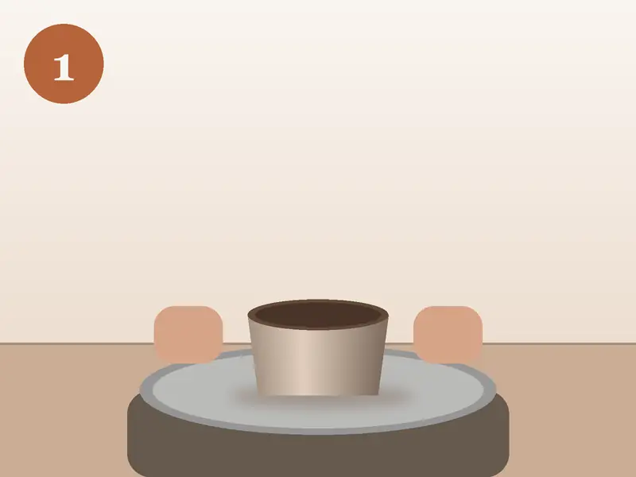
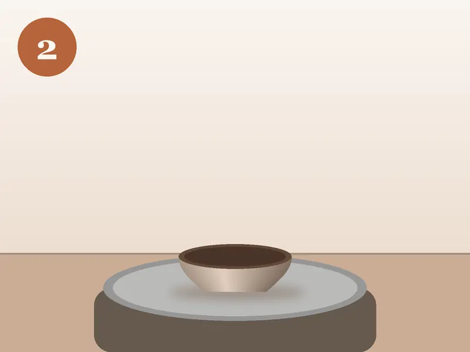
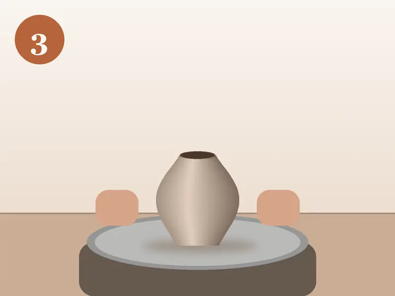
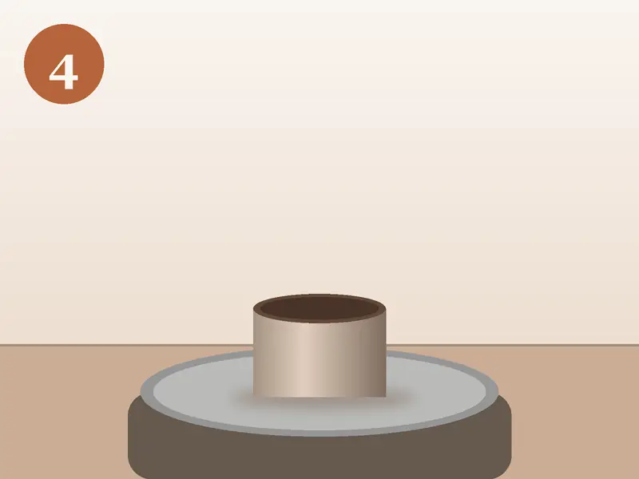
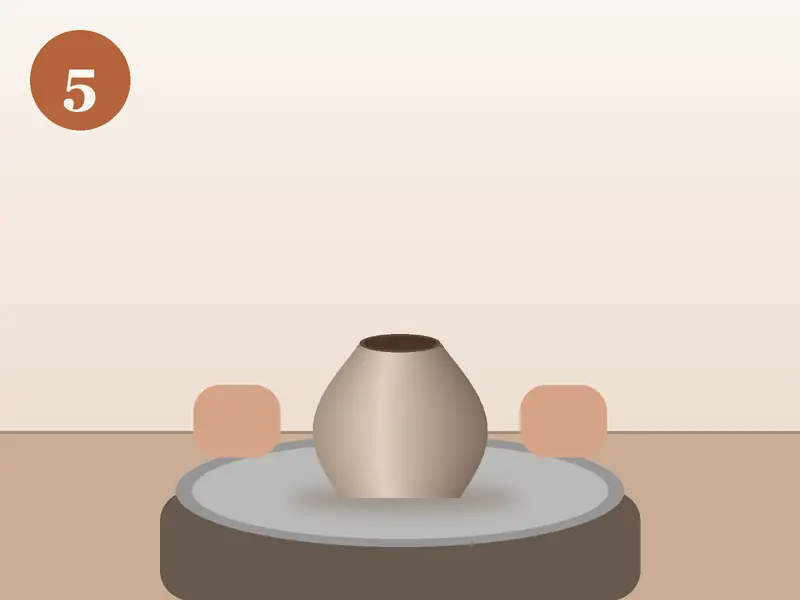

Советы из Reel
5 ошибок новичка на гончарном круге
Ошибаться на первом занятии нормально: мастер помогает на каждом этапе. Но если знать эти пять моментов заранее, первая чашка получится спокойнее.
-

Ошибка 1
Глина не отцентрована
Если кусок глины лежит на круге неровно, стенки получатся разной толщины и изделие поведёт в сторону. Мастер показывает, как упереть локти в колени и держать руки неподвижно, пока глина не перестанет «бить» в ладони.
-

Ошибка 2
Слишком много воды
Вода нужна, чтобы руки скользили, но лишняя размачивает глину, и стенки оседают. Достаточно смачивать ладони и губку, а лужу со дна убирать губкой.
-

Ошибка 3
Тонкие стенки снизу
Новички часто забывают про дно и низ стенок: там остаётся слишком тонко, и изделие трескается при обжиге. Мастер помогает проверить толщину иглой.
-

Ошибка 4
Быстрый круг на вытягивании
На центровке круг крутится быстро, а при вытягивании стенок скорость нужно снижать. Иначе верх изделия раскручивается и рвётся.
-

Ошибка 5
Сразу снимают изделие
Свежую чашку нельзя тянуть руками: её подрезают струной и переносят вместе с подставкой. Мастер снимает изделие сам и ставит сушиться.
Промокод на первый мастер-класс
Назовите промокод администратору или впишите его в комментарий к заявке.
Попробуйте сами
Гончарный круг, 2 часа — 2 900 ₽. Свободные места на ближайшие 14 дней — в расписании.